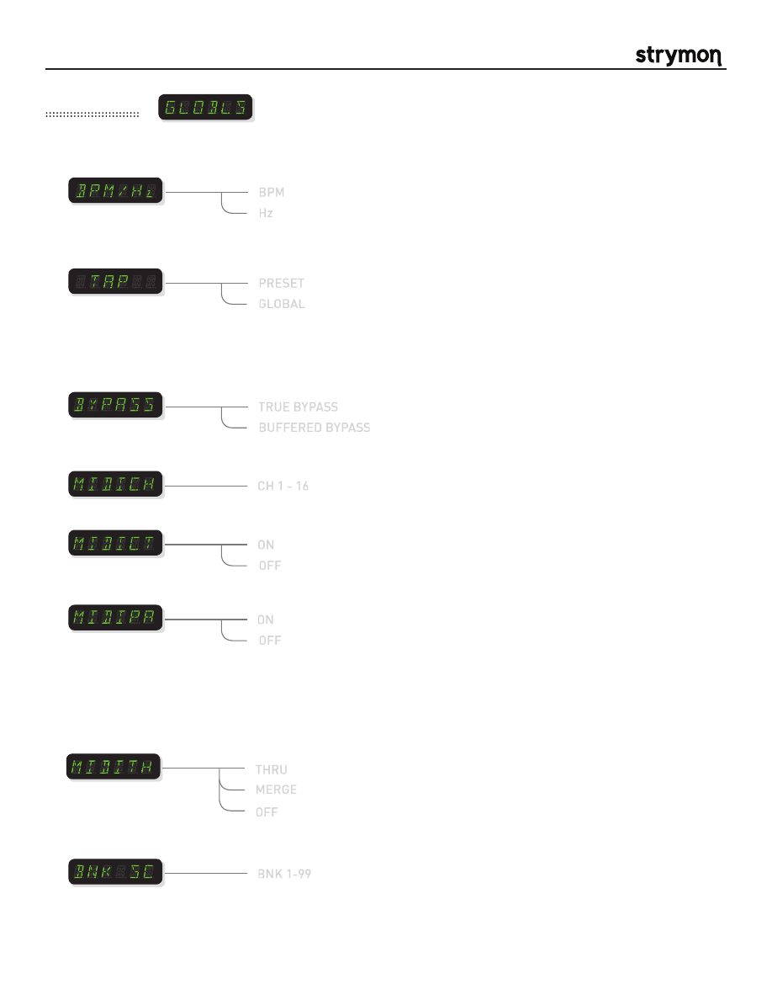

Mobius
-
User Manual
®
pg 20
Globals Menu
Global parameters affect Mobius regardless of what patch is currently active.
BPM
BPM Display:
Configures the display to show BPM in
Hz
or
Beats Per Minute.
Hz
TRUE BYPASS
Bypass Set-Up:
Changes the bypass mode between
True Bypass
and
Buffered Bypass
. In
True Bypass, electromechanical relays are used to bypass Mobius so that no
components are touching the input signal. In Buffered Bypass the bypassed
signal runs through a high quality analog buffer.
BUFFERED BYPASS
CH 1 - 16
MIDI Channel:
Sets the MIDI Channel. Can be set to 1 - 16.
ON
MIDI Continuous Controllers:
Turns MIDI CC messaging (continuous controllers) ON or OFF.
OFF
ON
MIDI Patch Change:
Turns MIDI patch change messaging ON or OFF.
OFF
PRESET
Global Tap:
Allows the last tapped tempo to affect all presets regardless of the tempo saved
in the preset.
GLOBAL
- when patch is changed, delay time will change to saved value in preset
- delay time will remain at the last tapped tempo regardless of current preset
BNK 1-99
Bank Scroll:
Sets the maximum bank number to scroll to.
THRU
MIDI Through:
When set to THRU, MIDI messages that arrive at the MIDI input are sent to the MIDI
output without ANY additional MIDI messages generated by Mobius. When set to
MERGE, MIDI messages that arrive at the input and those that are generated by
Mobius are merged together to be sent to the MIDI output. When set to OFF, only
MIDI messages generated by the controls on Mobius are sent to the MIDI output.
OFF
MERGE